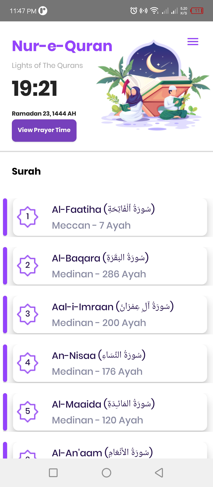

Nur-e-Quran
Downloads

Nur-e-Quran: Lights of the Quran
Our Feature:
114 Surah
Surah Audio and Translation
Prayer Time
Prayer Time With Locations (Longtitude and Latitude)
Prayer in Offline
Downloads
100K
Sep 1st - Last Update
New Users
92,200
↗︎ 400 (22%)